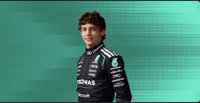
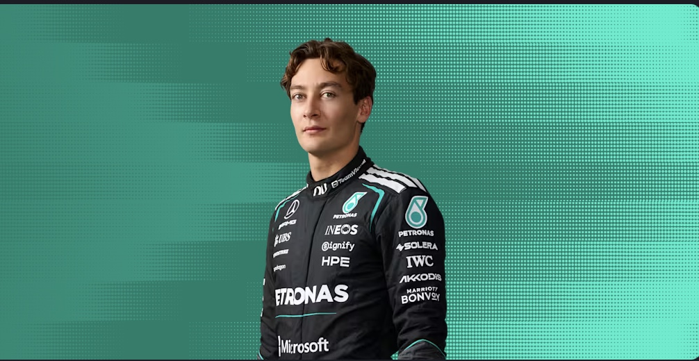
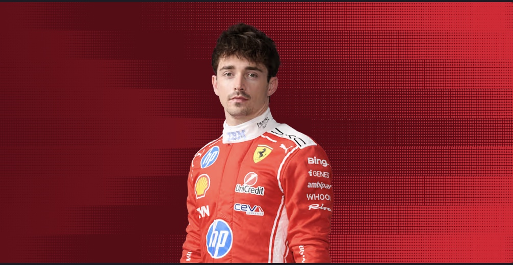

| 1st |  72 points |
Kimi Antonelli |
|---|---|---|
| 2nd |  63 points |
George Russell |
| 3rd |  49 points |
Charles Leclerc |
| 4th | 41 points | Lewis hamilton |
| 5th | 25 Points | Lando Norris |
| 6th | 21 Points | Oscar Piastri |
| 7th | 17 Points | Oli Bearman |
| 8th | 15 Points | Pierre Gasly |
| 9th | 12 Points | Max Verstappen |
| 10th | 10 Points | Liam Lawson |
| 11th | 4 Points | Arvid Lindblad |
| 12th | 4 Points | Isaak Hadjar |
| 13th | 2 Points | Gabriel Bortoleto |
| 14th | 2 Points | Carlos Sainz |
| 15th | 1 Point | Estaban Ocon |
| 16th | 1 Points | Franco Colopinto |
| 17th | 0 Points | Nico Hulkenburg |
| 18th | 0 Points | Alex Albon |
| 19th | 0 Points | Valtteri Bottas |
| 20th | 0 Points | Sergio Perez |
| 21st | 0 Points | Fernando Alonso |
| 22nd | 0 Points | Lance Stroll |